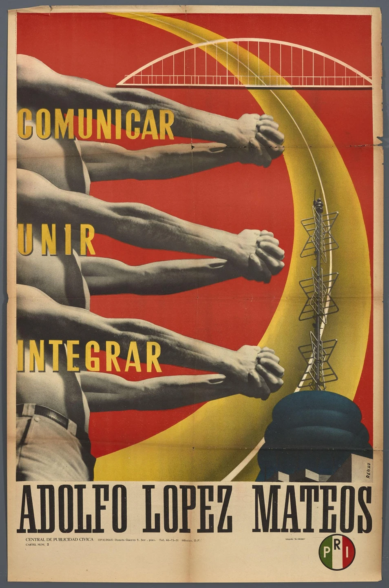
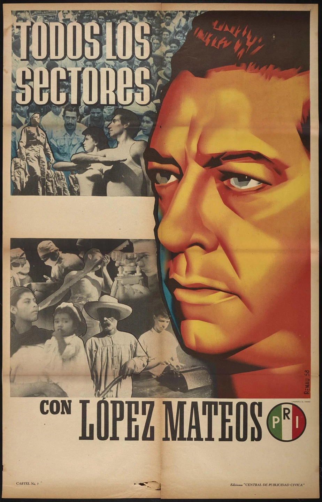
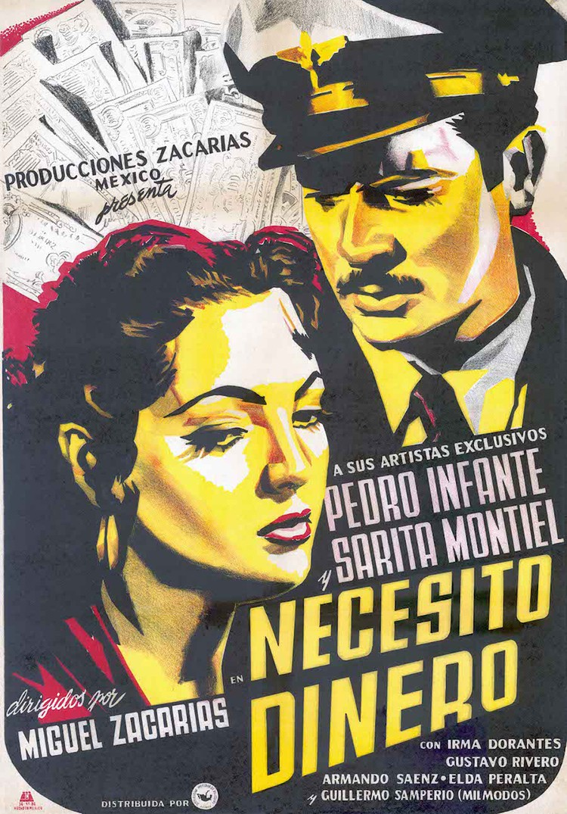
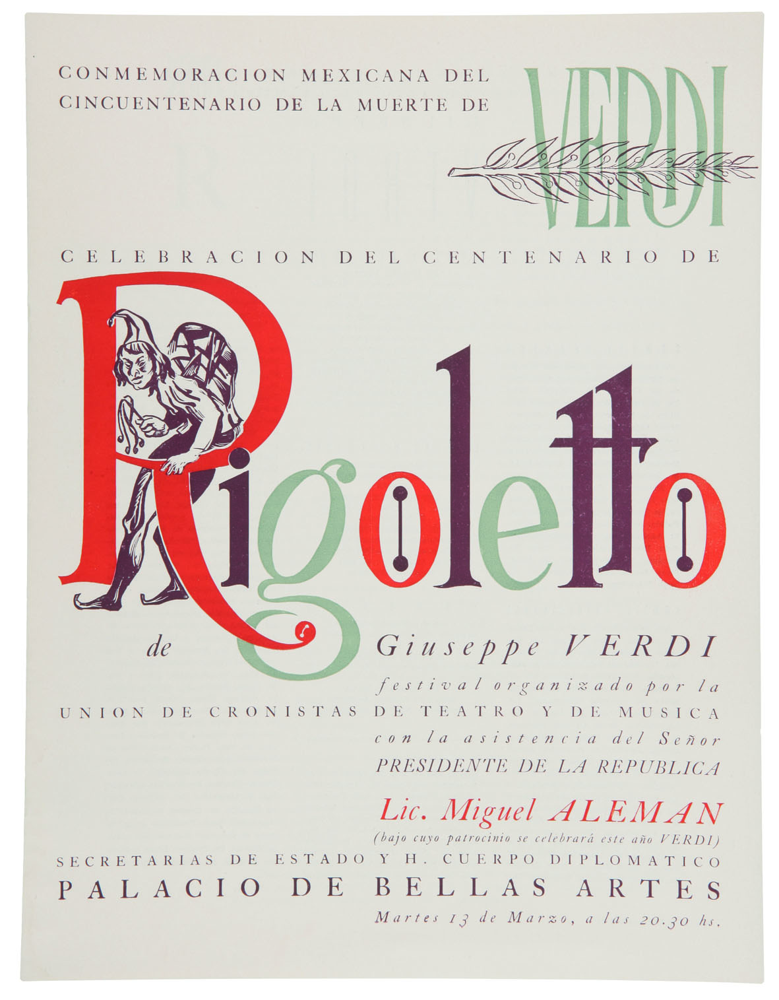
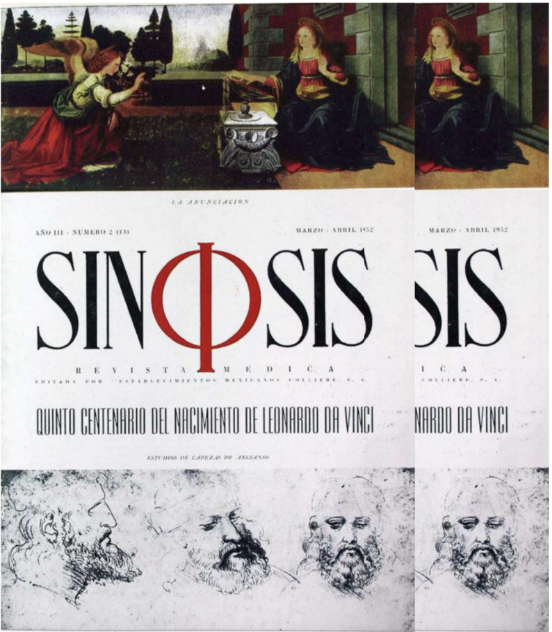
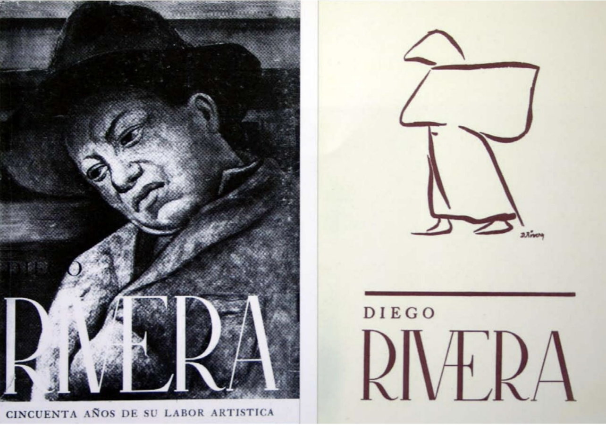
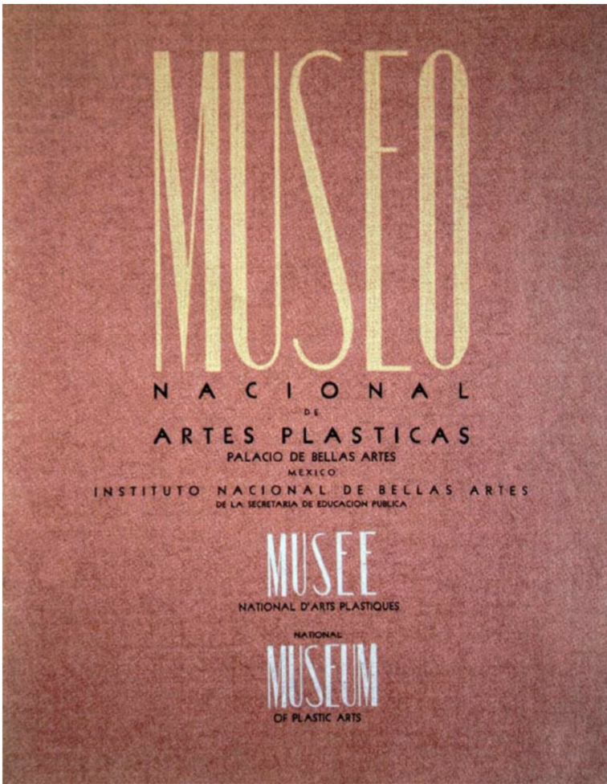

Graphic design in the 1950s in Mexico was closely connected to publishing, cultural institutions, and print media. Designers focused on editorial layouts, posters, and typography influenced by modernist ideas. Important figures such as Josep Renau and Miguel Prieto played a key role in shaping this period through their work in print and visual communication. The work was often formal, structured, and linked to intellectual and cultural production.






